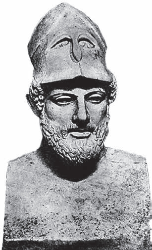
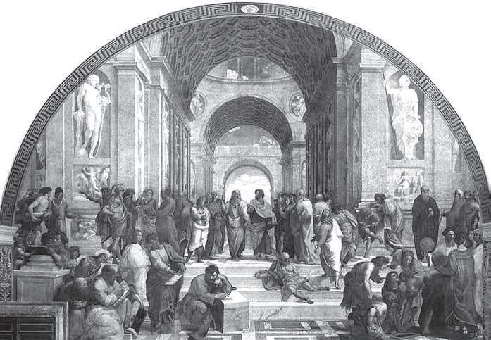
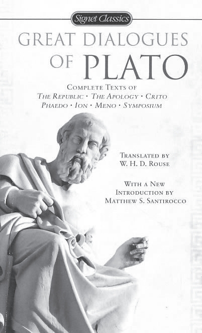
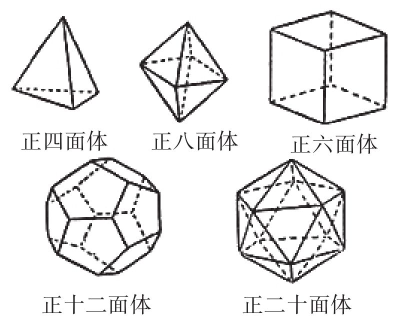
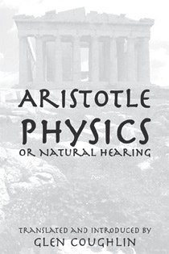
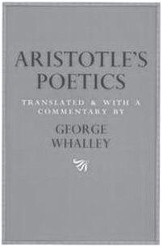

毕达哥拉斯学派在政治上倾向于贵族制，因而在希腊民主力量高涨时受到冲击并逐渐瓦解，毕达哥拉斯也逃离了克罗托内，不久后被杀。在持续不断的波（斯）希（腊）战争之后，雅典成为获胜的希腊的政治、经济和文化中心。尤其到了伯里克利（Pericles，约公元前495—约前429）时代，他对雅典民主政治制度的形成和发展做出了重大贡献，其中包括始建于公元前447年的卫城。
与此同时，希腊数学和哲学也随之走向繁荣，并产生了许多学派。第一个著名的学派叫伊利亚学派，创建人是毕达哥拉斯学派成员巴门尼德（Parmenides，约公元前515—约前445），他居住在意大利南部伊利亚（今那波利东南100多公里处），代表人物是他的学生芝诺（Zeno，约公元前490—约前425），师徒俩堪称前苏格拉底时期最有智慧的希腊人。
巴门尼德是少数几个用诗歌的形式表达哲学观点的希腊哲学家之一，他留下的诗集《论自然》（残片）的第一部分叫“真理之路”，包含了后来的哲学家们十分感兴趣的逻辑学说。巴门尼德认为，存在物的多样性及其变化形式和运动，不过是唯一永恒的存在之现象而已，于是产生了“一切皆一”的巴门尼德原理。巴门尼德认为无法想到的东西不能存在，因此能存在的是可以被想到的，这就与前辈哲学家赫拉克利特（Heraclitus，约公元前540—前470）的“它存在又不存在”相冲突。他还引入理性证明的方法作为论断的基础，因而被看作形而上学的创立者。值得一提的是，赫拉克利特、毕达哥拉斯和巴门尼德都被视为海外的爱奥尼亚人。

伯里克利塑像
柏拉图在《巴门尼德篇》里，用暧昧揶揄的语调记叙了巴门尼德和他的弟子芝诺去雅典的一次访问。其中写道：“巴门尼德年事已高，约65岁；头发灰白，但仪表堂堂。那时，芝诺约40岁，身材魁梧而美观，人家说他已变成巴门尼德所钟爱的人了。”虽然后世的希腊学者推测这次访问是柏拉图虚构的，但却认为对话中对芝诺观点的描写是准确可靠的。据说芝诺为巴门尼德的“存在论”做了辩护，但是不像他的老师那样从正面去证明存在是“一”而不是“多”，而是用归谬法去反证：“如果事物是多数的，将要比‘一’的假设得出更可笑的结果”。
这一方法就成了所谓“芝诺悖论”的出发点，芝诺从“多”和运动的假设出发，一共推导出40个不同的悖论。可惜由于著作失传，至今只留下来8个，其中以4个关于运动的悖论最为著名，这依赖于亚里士多德的《物理学》等著作的记载。即便是这几个悖论，后人的领会也是不得要领，他们认同亚里士多德的引述，认为它们只不过是一些有趣的谬见而加以批判。直到19世纪下半叶，学者们重新研究芝诺的悖论，才发现它们与数学中连续性、无限性等概念紧密相关。
下面，我们来依次介绍芝诺的4个运动悖论，引号内的文字是亚里士多德《物理学》中的原话：
1.二分说。“运动不存在。原因在于，移动事物在到达目的地之前必须先抵达一半处。”
2.阿喀琉斯追龟。阿喀琉斯（荷马史诗《伊利亚特》中善跑的猛将）永远追不上一只乌龟，因为阿喀琉斯每次必须先跑到乌龟的出发点。
3.飞箭静止说。“如果移动的事物总是‘现在’占有一个空间，那么飞驰的箭也是不动的。”
4.运动场。空间和时间并非由不可分割的单元组成。例如，运动场跑道上有三排队列A、B、C，令A往右移动，C往左移动，其速度相对于B而言均是每瞬间移动一个点。这样一来，A就在每个瞬间离开C两个点的距离，因而必然存在一个更小的时间单元。
前两个悖论针对的是事物无限可分的观点，后两个则蕴含着不可分无限小量的思想。要澄清这些悖论需要高等数学的知识，尤其是极限、连续和无穷集合等概念，这在当时和后来的希腊人看来都是无法理解的，因此包括亚里士多德在内的智者也不能给出解释。可是，亚里士多德分明注意到了，芝诺是从对方的论点出发，再用反证法将其论点驳倒，因此，他称芝诺是雄辩术的发明者。当然，这一切首先是由于希腊的言论自由和学派林立的氛围给了学者们探求真理的机会。
芝诺自幼在乡村长大，运动是他所热爱的事情，也许他提出这些悖论纯粹是出于好奇心和好胜心，并非要给城里的大人物们制造恐慌。不过，芝诺应该是反毕达哥拉斯主义的，后者把一切归因于整数。无论如何，正如美国数学史家贝尔所言，芝诺曾“以非数学的语言，记录下最早同连续性和无限性斗争的人们所遭遇的困难”。在2400年后的今天，人们已经明白，芝诺的名字永远也不会从数学史或哲学史中消失。近代德国哲学家黑格尔在《哲学史讲演录》中指出，芝诺主要是客观而辩证地考察了运动，他称芝诺是“辩证法的创始人”。
现在，我们要谈论古希腊三大哲学家之一的柏拉图（Plato，公元前427—前347），还有两位分别是他的老师苏格拉底（Socrates，公元前469—前399）和学生亚里士多德（Aristotle，公元前384—前322）。这三位都与雅典有关，苏格拉底和柏拉图出生在雅典，亚里士多德则在那里学习之后又执教。苏格拉底既无著作流传后世，也没有建立什么学派，有关他的生平和哲学思想我们主要通过柏拉图和苏格拉底的另一位弟子色诺芬（Xenophon，公元前440—前354）来了解。后者既是一位将军，也是历史学家和散文家。苏格拉底在数学方面并无太大的建树，但正如他的两位弟子所评价的，他在逻辑学上有两大贡献，即归纳法和一般定义法。
苏格拉底对柏拉图的影响是无法估量的，尽管后者出生于显赫家庭，而前者的双亲分别是雕刻匠和助产士。苏格拉底相貌平平，不修边幅，却对肉体有着惊人的克制力，有时说着话就突然停下来陷入沉思。尽管很少饮酒，但每饮必有酒友滚倒在桌子底下而苏格拉底却毫无醉意。苏格拉底之死（因受指控腐蚀雅典青年的灵魂而被判服毒），以及临死前表现出来的大无畏精神，给予柏拉图深深的刺激，使他放弃了从政的念头，终其一生投入哲学研究。柏拉图称他的导师是“我所见到的最智慧、最公正、最杰出的人物”。
苏格拉底死后，柏拉图离开雅典，开始了长达10年（或许是12年）的游历，先后去往小亚细亚、埃及、昔兰尼（今利比亚）、南意大利和西西里等地。途中，柏拉图接触了多位数学家，并亲自钻研数学。返回雅典之后，柏拉图创办了一所颇似现代私立大学的学园（Academy，这个词现在的意思是科学院或高等学府）。学园里有教室、饭厅、礼堂、花园和宿舍，柏拉图担任园（校）长，并和他的助手们负责讲授各门课程。除了几次应邀赴西西里讲学以外，他在学园里度过了他生命的后40年，学园更是奇迹般地存在了900年。
作为哲学家，柏拉图对欧洲的哲学乃至整个文化、社会的发展有着深远的影响。他一生共撰写了36本著作，大部分用对话的形式写成。内容主要关乎政治和道德问题，也有的涉及形而上学和神学。例如，他在《国家篇》里提出，所有的人，不论男女，都应该有机会展示才能，进入管理机构。在《会饮篇》里这位终生未娶的智者谈到了爱欲，“爱欲是从灵魂出发，达到渴求的善，对象是永恒的美”。用最通俗的话讲就是，爱一个美人，实际上是通过美人的身体和后嗣，求得生命的不朽。

拉斐尔名画《雅典学派》。柏拉图和亚里士多德居中，毕达哥拉斯、芝诺、欧几里得均在其列
虽然柏拉图本人并没有在数学研究方面做出特别突出的贡献（有人将分析法和归谬法归功于他），但他的学园却是那个时代希腊数学活动的中心，大多数重要的数学成就均由他的弟子取得。例如，一般整数的平方根或高次方根的无理性研究（包括摆脱由无理数的发现导致的第一次数学危机），正八面体和正二十面体的构造，圆锥曲线和穷竭法的发明（前者的发明是为了解决倍立方体问题[1]），等等。就连欧几里得早年也来学园攻读几何学，这一切使得柏拉图及其学园赢得了“数学家的缔造者”的美名。
对数学哲学的探究，也起始于柏拉图。在他看来，数学研究的对象应该是理念世界中永恒不变的关系，而不是现象世界的变化无常。他不仅把数学概念和现实中相应的实体区分开来，也把其和在讨论中用以代表它们的几何图形严格区分开来。举例来说，三角形的理念是唯一的，但存在许多三角形，也存在关于这些三角形的各种不完善的摹本，即各种具有三角形形状的现实物体。这样一来，就把起始于毕达哥拉斯的对数学概念的抽象化定义又推进了一步。
在柏拉图的所有著作中，最有影响力的无疑是《理想国》。这部书由10篇对话组成，核心部分勾勒出形而上学和科学的哲学。其中第6篇谈及数学假设和证明，他写道：“研究几何、算术这类学问的人，首先要假定奇数、偶数、三种类型的角以及诸如此类的东西是已知的……从已知的假设出发，以前后一致的方式向下推导，直至得到想要的结论。”由此可见，演绎推理在学园里已然盛行。柏拉图还把数学作图工具严格限定为直尺和圆规，这对于后来欧几里得几何公理体系的形成有着重要的促进作用。

《柏拉图对话录》英文版（2008），含《理想国》

被称为“柏拉图多面体”的5种正多面体
谈到几何学，我们都知道那是柏拉图极力推崇的学问，是他构想的要花费10年学习的精密科学的重要组成部分。柏拉图认为创造世界的上帝是一个“伟大的几何学家”，他对（仅有的）5种正多面体的特征和作图有过系统的阐述，以至于它们被后人称为“柏拉图多面体”。从公元6世纪以来广为流传的一则故事说，在柏拉图学园门口刻着这样的字，“不懂几何学的人请勿入内”。无论如何，柏拉图充分意识到了数学对探求人类理想的重要性，在他晚年的一部著作中，他甚至把那些无视这种重要性的人形容为“猪一般的家伙”。
公元前347年，柏拉图在参加一位朋友的结婚宴会时忽感不适，退到屋子一角平静地辞世，享年80岁。虽然没有记载，但参加他葬礼的人中应该有他亲自教诲过的学生亚里士多德。自从17岁那年被监护人送入柏拉图学园，他跟随柏拉图已经整整20年了。亚里士多德无疑是学园培养的最出色的学生，他后来成为世界古代史上最伟大的哲学家和科学家，对西方文化的取向和内容有着深远的影响，这是其他任何思想家都无法媲美的。
亚里士多德出生在希腊北部哈尔基季基半岛上，当时是马其顿的领土（如今是希腊北部的旅游中心），其父曾担任马其顿国王的御医。或许是受父亲的影响，亚里士多德对生物学和实证科学饶有兴趣；在柏拉图的影响下，他后来又迷恋上哲学推理。在柏拉图死后，亚里士多德开始了游历（正像苏格拉底去世后柏拉图开始游历一样）。他和他的同学兼好友先在小亚细亚的阿苏斯停留了三年，接着到附近莱斯沃斯岛上的米蒂利尼创办了一个研究中心（这两处地方的地理位置恰如南面的米利都和萨摩斯岛），开始从事生物学研究。
42岁那年，亚里士多德应马其顿国王腓力二世的邀请，来到首都培拉担任13岁的王子亚历山大的家庭教师。他试图依照荷马史诗《伊利亚特》中的英雄形象塑造王子，使其体现希腊文明的最高成就。几年之后，亚里士多德返回故乡，直到公元前335年亚历山大继承王位，亚里士多德又来到雅典，创办了自己的学园（吕园）。此后的12年间，除了研究和写作，他把自己的精力全部投入到吕园的教学和管理事务上。据说亚里士多德授课时喜欢在庭园里边走边讲，以至于今日英文里演讲或论述一词（discourse）的原意就是“走来走去”。

亚里士多德的《物理学》拉丁文版（1623）
吕园和柏拉图学园均坐落在雅典郊外，与柏拉图的兴趣偏向数学不同，亚里士多德感兴趣的主要是生物学和历史学。但亚里士多德毕竟在学园里熏陶了20年，因而继承了柏拉图的部分数学思想。他对定义做了更为细致的讨论，同时深入研究了数学推理的基本原理，并将它们区分为公理和公设。在他看来，公理是一切科学共同的真理，而公设则是某一门科学特有的最初原理。
亚里士多德在数学领域里最重要的贡献就是将数学推理规范化和系统化，其中最基本的原理是矛盾律（一个命题不能既是真的又是假的），以及排他律（一个命题要么是真的，要么是假的，两者必居其一），它们早已成为数学证明的核心。在哲学领域，亚里士多德最大的贡献在于创立了形式逻辑学，尤其是俗称三段论的逻辑体系，这是他百科全书式的众多建树中的一个。形式逻辑学被后人奉为推理演绎的圭臬，在当时则为欧几里得几何学奠定了方法论的基础，欧几里得几何学无疑是希腊数学黄金时代的标志性成就。
此外，亚里士多德还是新近从数学领域中独立出来的统计学的鼻祖。他撰写的“城邦政情”，包含了各个城邦的历史、行政、科学、艺术、人口、资源和财富等社会和经济情况的比较分析。这类研究后来延续了2000多年，直到17世纪中叶才被替代，并迅速演化为“统计学”（statistics），但依然保留了城邦（state）的词根。
最后，必须提及亚里士多德的《诗学》，此书不仅讲述如何写诗，也教导人们如何作画、演戏……这本薄薄的小册子与稍后出版的欧几里得的《几何原本》都是基于对三维空间的模仿，只不过前者是形象的模仿，后者是抽象的模仿，它们堪称古代世界文艺理论和数学理论的最顶尖的总结。

亚里士多德的《诗学》英文版（2004）
[1] 倍立方体问题是所谓的古希腊三大几何问题之一，另外两个是化圆为方问题、三等分角问题。直到19世纪数学家们才弄清楚，这三个问题实际上是不可解的。